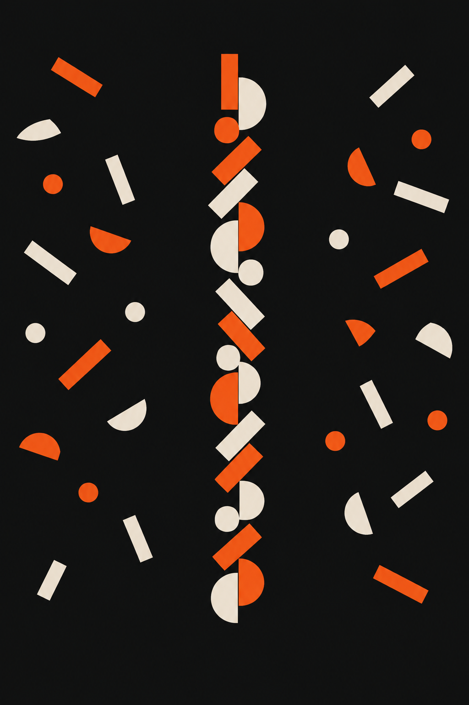

Flovah NoteJun.2026
첫 미팅이
결과를
결정합니다
결과를
결정합니다
좋은 결과물은 좋은 시작에서 나옵니다.
제작사와의 첫 미팅, 어떻게 준비하고 계신가요.
제작사와의 첫 미팅, 어떻게 준비하고 계신가요.
Flovah NoteJun.2026
01 · 정의
콘텐츠 제작의 80%는
만들기 전에 결정됩니다
만들기 전에 결정됩니다
결과물의 품질은 제작 실력만으로
결정되지 않습니다.
방향, 범위, 기대치.
첫 미팅에서 맞추지 않으면
시안에서 다시 맞춰야 합니다.
결정되지 않습니다.
방향, 범위, 기대치.
첫 미팅에서 맞추지 않으면
시안에서 다시 맞춰야 합니다.
Flovah NoteJun.2026
02 · 문제
준비 없이 시작하면
생기는 일
생기는 일
방향이 모호해서 시안이 계속 산으로
3차 수정부터 서로 지치기 시작
3차 수정부터 서로 지치기 시작
"이거 말고 다른 느낌으로"의 반복
제작사도 기준을 잡지 못하는 상황
제작사도 기준을 잡지 못하는 상황
일정은 밀리고, 비용은 늘어나고
결국 양쪽 모두 불만족한 결과물
결국 양쪽 모두 불만족한 결과물
Flovah NoteJun.2026
03 · 관점
좋은 첫 미팅은
시안 수정을 줄입니다
시안 수정을 줄입니다
첫 미팅은 인사하는 자리가 아닙니다.
방향, 범위, 기대치를
서로 맞추는 자리입니다.
첫 미팅에서 30분을 더 쓰면,
수정에서 2주를 줄일 수 있습니다.
방향, 범위, 기대치를
서로 맞추는 자리입니다.
첫 미팅에서 30분을 더 쓰면,
수정에서 2주를 줄일 수 있습니다.
Flovah NoteJun.2026
04 · 차이
같은 프로젝트,
다른 첫 미팅
다른 첫 미팅
BEFORE"요즘 이런 게 트렌드입니다"
NOW"어떤 느낌을 원하세요?"
BEFORE디자이너 감각으로 완성 후 전달
NOW고객과 대화하며 방향을 함께 설정
BEFORE결과물 전달 후 피드백 대응
NOW과정 전체가 대화, 결과도 합의
Flovah NoteJun.2026
05 · 구조
FLOVAH의
첫 미팅 체크리스트
첫 미팅 체크리스트
Brand
브랜드 이해
톤, 가이드라인,
기존 콘텐츠 확인
기존 콘텐츠 확인
Goal
목표 정의
이번 프로젝트의
구체적인 목적 설정
구체적인 목적 설정
Scope
범위 합의
산출물, 수정 횟수,
일정을 명확히
일정을 명확히
Ref
레퍼런스 정리
방향성 공유,
제외할 것도 명시
제외할 것도 명시
Flovah NoteJun.2026
06 · 솔직히
"처음부터 다 정하면
창의성이 줄지 않나요?"
창의성이 줄지 않나요?"
방향을 정하는 것과
결과물을 정하는 것은 다릅니다.
명확한 방향은 제약이 아니라
창의적 공간을 만들어 줍니다.
출발점이 분명할수록 제작사는
더 과감하게 제안할 수 있습니다.
결과물을 정하는 것은 다릅니다.
명확한 방향은 제약이 아니라
창의적 공간을 만들어 줍니다.
출발점이 분명할수록 제작사는
더 과감하게 제안할 수 있습니다.
Flovah NoteJun.2026
07 · 원칙
좋은 첫 미팅의
세 가지 원칙
세 가지 원칙
무엇을 위한 콘텐츠인지 명확히
목적을 먼저 말합니다
목적을 먼저 말합니다
좋은 예시 3개가 회의록보다 낫습니다
예시로 대화합니다
예시로 대화합니다
일정, 범위, 수정 기준을 합의합니다
기대치를 맞춥니다
기대치를 맞춥니다
Flovah NoteJun.2026
08 · 제안
시작이 맞으면
끝도 맞습니다
끝도 맞습니다
미용실에서도, 디자인에서도
결국 답은 같습니다.
"어떤 스타일을 원하세요?"
모호한 시작이 모호한 결과를 만들고,
좋은 시작이 좋은 결과를 만듭니다.
결국 답은 같습니다.
"어떤 스타일을 원하세요?"
모호한 시작이 모호한 결과를 만들고,
좋은 시작이 좋은 결과를 만듭니다.
Flovah NoteJun.2026
복잡한 이야기를
명료하게, 완벽하게.
명료하게, 완벽하게.
www.flovah.com
Upload Note
캡션
좋은 결과물은 좋은 시작에서 나옵니다.
첫 미팅에서 30분을 더 쓰면 수정에서 2주를 아낄 수 있습니다.
플로바가 첫 미팅에서 꼭 확인하는 것들을 정리했습니다.
첫 미팅에서 30분을 더 쓰면 수정에서 2주를 아낄 수 있습니다.
플로바가 첫 미팅에서 꼭 확인하는 것들을 정리했습니다.
해시태그